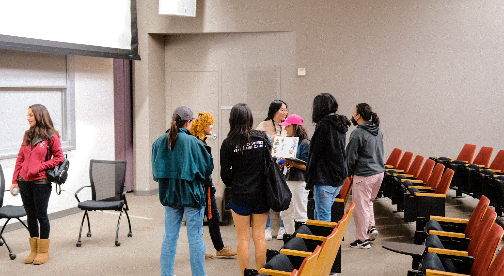

echos of inspiration

At an early age, I discovered the versatility for existing between two distinct worlds: English and Spanish, Tech and Film, Logic and Creative. With this I have been able to translate this skill for delivering technical content in all mediums.
Speaking of film, my passion lies in empathizing with the complexity of being human. It is an art that centers me and I will work hard to architect the untold stories.

Equally in this process, I have learned that the most powerful thing you can do is share your knowledge. Whether it be through videos or articles, I envision answering a question for my past self.